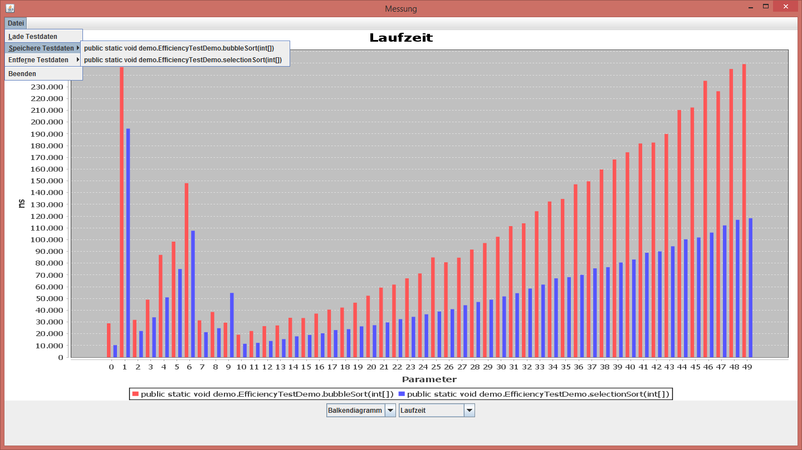

Herr Bob möchte seinen Schülern einen Vergleich mehrerer Sortieralgorithmen vorstellen. Hierzu will er nicht die BlueJ-GUI verwenden, sondern mithilfe der API der VisualJ-Bibliothek eigenständig bestimmen, welche Argumente an die zu testenden Methoden übergeben werden.
Hier nochmal beispielhaft zwei Sortieralgorithmen mit Schrittzähler:
public static void bubbleSort(int[] arr) {
for (int i = 1; i < arr.length; ++i) {
for (int j = 0; j < arr.length - i; ++j) {
if (arr[j] > arr[j + 1]) {
swap(arr, j, j + 1);
}
StepCounter.step();
}
}
}
public static void selectionSort(int[] arr) {
for (int i = 0; i < arr.length - 1; ++i) {
int min = i;
for (int j = i + 1; j < arr.length; ++j) {
if (arr[j] < arr[min]) {
min = j;
}
StepCounter.step();
}
swap(arr, i, min);
}
}Herr Bob hat nun zwei Möglichkeiten, die übergebenen Argumente zu bestimmen.
Die erste und einfachere Methode besteht darin, einfach die Argumente hart zu kodieren:
public void compareSortingAlgorithms() {
List<TestRun.Result[]> results = new LinkedList<>();
*1 Object[][] arguments = new Object[][] {
{ new int[] {3, 1, 2} },
{ new int[] {5, 4, 5, 6, 2, 3, -42, 21} }
};
*2 try {
EfficiencyTest bubbleSortTest = new EfficiencyTest(
null,
EfficiencyTestDemo.class.getDeclaredMethod("bubbleSort", int[].class),
arguments,
10
);
EfficiencyTest selectionSortTest = new EfficiencyTest(
null,
EfficiencyTestDemo.class.getDeclaredMethod("selectionSort", int[].class),
arguments,
10
);
*3 results.add(bubbleSortTest.run());
results.add(selectionSortTest.run());
} catch (IllegalArgumentException | NoSuchMethodException | SecurityException
| NoDefaultConstructorException | InvocationTargetException | IllegalAccessException e) {
System.err.println("Exception while running efficiency tests: " + e.getMessage());
e.printStackTrace();
}
*4 EfficiencyResultWindow win = new EfficiencyResultWindow(results);
win.setVisible(true);
waitForWindowToClose(win);
}Herr Bob erstellt ein Array, welches alle Argumenttupel enthält, die getestet werden sollen (*1).
Der Typ dieses Arrays muss Object[][] sein. Genauer gesagt muss es, falls die zu testende Methode die Signatur
methodName(Type0, Type1, Type2)
hat, den folgenden Typ haben:
Object[][] {
{ Type0, Type1, Type2 },
{ Type0, Type1, Type2 },
{ Type0, Type1, Type2 }
...
}
Da die Methoden, die Herr Bob testen will, jeweils ein int[] als Argument nehmen, sieht das Array also aus wie im obigen Codebeispiel.
Anschließend erstellt er für jede zu testende Methode einen eigenen EfficiencyTest (*2).
Diesem übergibt er das Objekt, auf dem die Methode ausgeführt werden soll (hier beidesmal null, da beide Methoden statisch sind.
null ist auch für nicht-statische Methoden erlaubt, falls die Klasse einen öffentlichen Default-Konstruktor besitzt),
die zu testende Methode, das arguments-Array, sowie eine Genauigkeit n.
Die Methode wird mit jedem Argumententupel n-mal ausgeführt. Im Ergebnisfenster sieht Herr Bob anschließend nur den Median aller gemessenen Werte über diese n Ausführungen.
Die EfficiencyTests werden über run() ausgeführt (*3).
Anschließend erstellt Herr Bob ein Fenster, dem er eine Liste der Ergebnisse aller ausgeführten Tests übergibt (*4).
Noch ein wichtiger Hinweis: Bei primitiven Typen, Arrays derselben und Klassen, die eine clone()-Methode bereitstellen, ist es kein Problem, dasselbe arguments-Array
an alle EfficiencyTests zu übergeben. Bei nicht klonbaren Typen, dürfen entweder die zu testenden Methoden ihre Eingaben nicht verändern, oder es muss für jeden Test ein eigenes arguments-Array
erstellt werden. Dasselbe gilt bei nicht-statischen Methoden für die Objekte, auf denen diese ausgeführt werden.
Die zweite Methode besteht darin, einen Generator zu schreiben:
public class MyGenerator implements EfficiencyTest.ArgumentTupleGenerator {
private final int NUMBER_OF_TUPLES = 50;
private int count = 1;
@Override
public Object[] yield() {
if (count > NUMBER_OF_TUPLES) {
return null;
}
Random rand = new Random();
int[] arr = new int[count * 10];
for (int i = 0; i < arr.length; ++i) {
arr[i] = rand.nextInt();
}
++count;
return new Object[] { arr };
}
}
Dieser Generator verfügt über eine yield()-Methode, die die zu übergebenden Argumenttupel in der gewünschten Reihenfolge zurückgibt.
Nachdem der letzte Tupel zurückgegeben wurde, muss bei jedem folgenden Aufruf null zurückgegeben werden.
Herr Bob kann nun statt einem Object[][]-Array eine Instanz dieses Generators übergeben:
public void compareSortingAlgorithmsAdvanced() {
List<TestRun.Result[]> results = new LinkedList<>();
try {
EfficiencyTest bubbleSortTest = new EfficiencyTest(
null,
EfficiencyTestDemo.class.getDeclaredMethod("bubbleSort", int[].class),
new MyGenerator(),
10
);
EfficiencyTest selectionSortTest = new EfficiencyTest(
null,
EfficiencyTestDemo.class.getDeclaredMethod("selectionSort", int[].class),
new MyGenerator(),
10
);
results.add(bubbleSortTest.run());
results.add(selectionSortTest.run());
} catch (IllegalArgumentException | NoSuchMethodException | SecurityException
| NoDefaultConstructorException | InvocationTargetException | IllegalAccessException e) {
System.err.println("Exception while running efficiency tests: " + e.getMessage());
e.printStackTrace();
}
EfficiencyResultWindow win = new EfficiencyResultWindow(results);
win.setVisible(true);
waitForWindowToClose(win);
}
Wichtig ist hierbei, dass jeder EfficiencyTest eine eigene Instanz des Generators bekommt.
Das fertige EfficiencyResultWindow sieht dann folgendermaßen aus: 
Im Datei-Menü lassen sich Testergebnisse von einzelnen Methoden speichern und vorher gespeicherte Testergebnisse laden. So kann man auf einfache Weise verschiedene Methoden vergleichen.
Mit den unteren Schaltflächen kann man zwischen drei Testgrößen (Laufzeit in Nanosekunden, Schrittzähler, Speicherverbrauch) und zwei Darstellungen (Balkendiagramm, Graph/Streudiagramm) wechseln